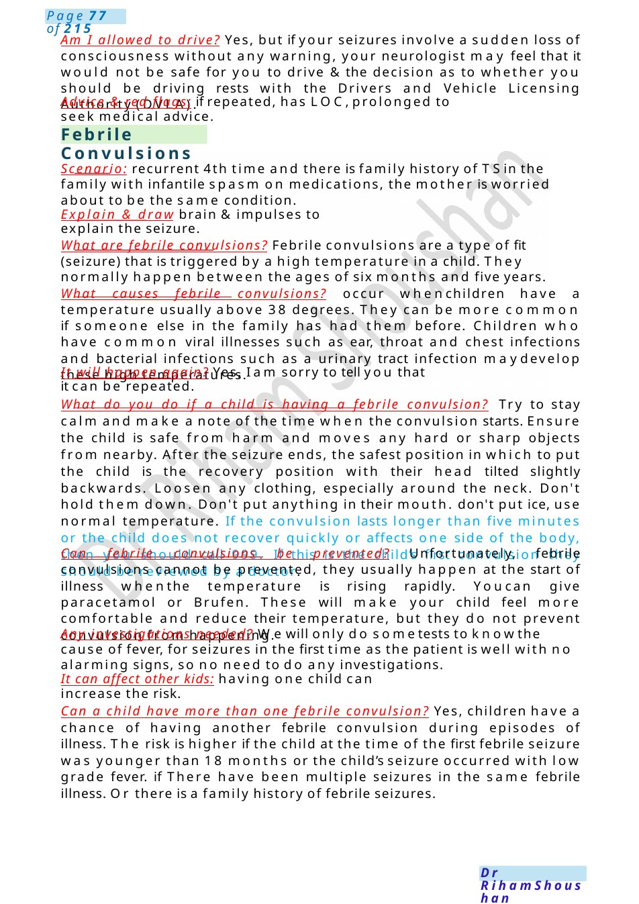
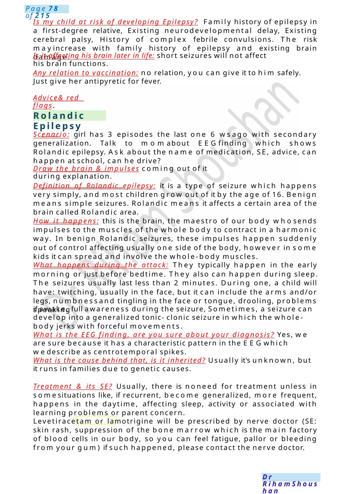

Febrile Convulsions
Am I allowed to drive? Yes, but if your seizures involve a sudden loss of consciousness without any warning, your neurologist may feel that it would not be safe for you to drive &the decision as to whether you should be driving rests with the Drivers and Vehicle Licensing Authority (DVLA). Advice & red flags: if repeated, has LOC,prolonged to seek medical advice.
Scenario Summary
Am I allowed to drive? Yes, but if your seizures involve a sudden loss of consciousness without any warning, your neurologist may feel that it would not be safe for you to drive &the decision as to whether you should be driving rests with the Drivers and Vehicle Licensing Authority (DVLA). Advice & red flags: if repeated, has LOC,prolonged to seek medical advice.
Full Original Scenario

Febrile Convulsions
Am I allowed to drive? Yes, but if your seizures involve a sudden loss of consciousness without any warning, your neurologist may feel that it would not be safe for you to drive &the decision as to whether you should be driving rests with the Drivers and Vehicle Licensing Authority (DVLA).
Advice & red flags: if repeated, has LOC,prolonged to seek medical advice.
Scenario: recurrent 4th time and there is family history of TSin the family with infantile spasm on medications, the mother is worried about to be the same condition.
Explain & draw brain &impulses to explain the seizure.
What are febrile convulsions? Febrile convulsions are a type of fit (seizure) that is triggered by a high temperature in a child. They normally happen between the ages of six months and five years.
What causes febrile convulsions? occur whenchildren have a temperature usually above 38 degrees. They can be more common if someone else in the family has had them before. Children who have common viral illnesses such as ear, throat and chest infections and bacterial infections such as a urinary tract infection maydevelop these high temperatures.
It will happen again? Yes, I am sorry to tell you that it can be repeated.
What do you do if a child is having a febrile convulsion? Try to stay calm and make a note of the time when the convulsion starts. Ensure the child is safe from harm and moves any hard or sharp objects from nearby. After the seizure ends, the safest position in which to put the child is the recovery position with their head tilted slightly backwards. Loosen any clothing, especially around the neck. Don't hold them down. Don't put anything in their mouth. don't put ice, use normal temperature. If the convulsion lasts longer than five minutes or the child does not recover quickly or affects one side of the body, then you should call 999. If this is the child’s first convulsion they should be reviewed by a doctor.
Can febrile convulsions be prevented? Unfortunately, febrile convulsions cannot be prevented, they usually happen at the start of illness whenthe temperature is rising rapidly. Youcan give paracetamol or Brufen. These will make your child feel more comfortable and reduce their temperature, but they do not prevent convulsion from happening.
Any investigations needed? Wewill only do sometests to knowthe cause of fever, for seizures in the first time as the patient is well with no alarming signs, so no need to do any investigations.
It can affect other kids: having one child can increase the risk.
Can a child have more than one febrile convulsion? Yes, children have a chance of having another febrile convulsion during episodes of illness. The risk is higher if the child at the time of the first febrile seizure was younger than 18 months or the child’s seizure occurred with low grade fever. if There have been multiple seizures in the same febrile illness. Or there is a family history of febrile seizures.

Rolandic Epilepsy
Is my child at risk of developing Epilepsy? Family history of epilepsy in a first-degree relative, Existing neurodevelopmental delay, Existing cerebral palsy, History of complex febrile convulsions. The risk mayincrease with family history of epilepsy and existing brain damage.
Is it affecting his brain later in life: short seizures will not affect his brain functions.
Any relation to vaccination: no relation, you can give it to him safely. Just give her antipyretic for fever.
Advice& red flags.
Scenario: girl has 3 episodes the last one 6 wsago with secondary generalization. Talk to momabout EEGfinding which shows Rolandic epilepsy. Ask about the name of medication, SE, advice, can happen at school, can he drive?
Draw the brain & impulses coming out of it during explanation.
Definition of Rolandic epilepsy: it is a type of seizure which happens very simply, and most children grow out of it by the age of 16. Benign means simple seizures. Rolandic means it affects a certain area of the brain called Rolandic area.
How it happens: this is the brain, the maestro of our body whosends impulses to the muscles of the whole body to contract in a harmonic way. In benign Rolandic seizures, these impulses happen suddenly out of control affecting usually one side of the body, however in some kids it can spread and involve the whole-body muscles.
What happens during the attack: They typically happen in the early morning or just before bedtime. They also can happen during sleep. The seizures usually last less than 2 minutes. During one, a child will have: twitching, usually in the face, but it can include the arms and/or legs, numbnessand tingling in the face or tongue, drooling, problems speaking
if awake, full awareness during the seizure, Sometimes, a seizure can develop into a generalized tonic- clonic seizure in which the whole-body jerks with forceful movements.
What is the EEG finding, are you sure about your diagnosis? Yes, we are sure because it has a characteristic pattern in the EEGwhich wedescribe as centrotemporal spikes.
What is the cause behind that, is it inherited? Usually it's unknown, but it runs in families due to genetic causes.
Treatment & its SE? Usually, there is noneed for treatment unless in somesituations like, if recurrent, become generalized, more frequent, happens in the daytime, affecting sleep, activity or associated with learning problems or parent concern.
Levetiracetam or lamotrigine will be prescribed by nerve doctor (SE: skin rash, suppression of the bone marrow which is the main factory of blood cells in our body, so you can feel fatigue, pallor or bleeding from your gum) if such happened, please contact the nerve doctor.